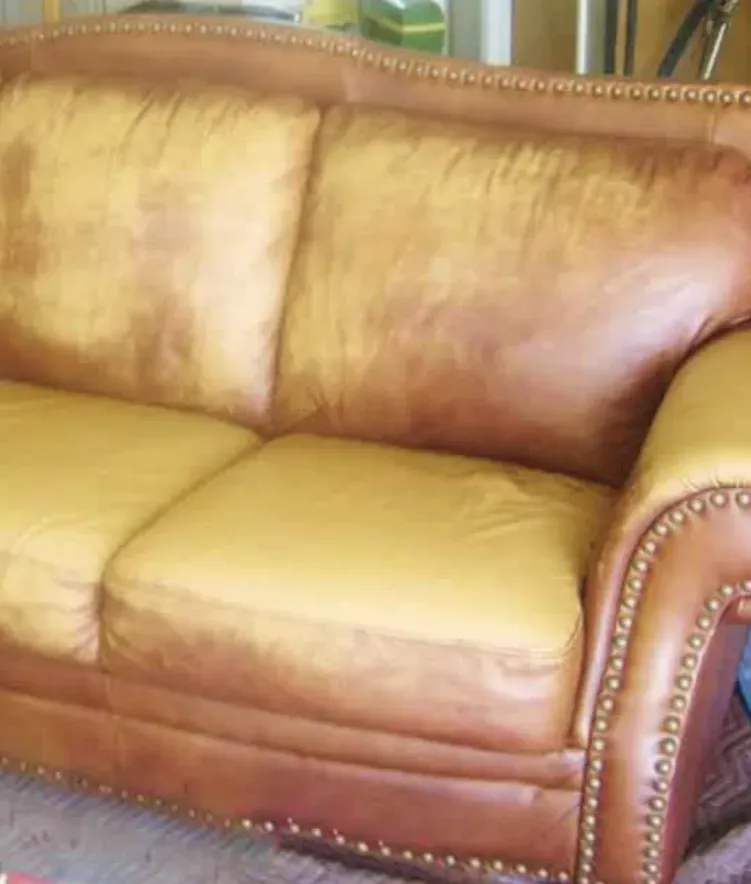
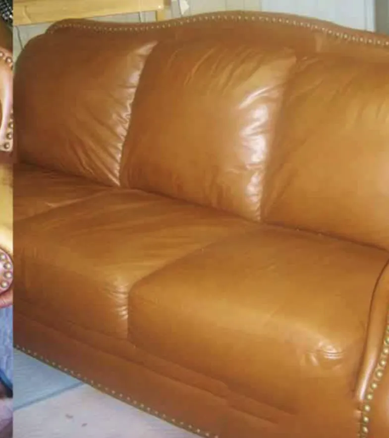

Ledersofa reinigen und pflegen lassen
Fett- und Körperspuren raus, Pflege rein. Bei Ihnen zu Hause in Wiesbaden, Mainz und Frankfurt.
Festpreis nach Fotos, in Wiesbaden ohne Anfahrtskosten
Was ich mit Ihrem Leder mache
Leder reinigen
Alltagsschmutz und matte Stellen auf Sitzflächen und Armlehnen schonend entfernen.
Fett- und Körperspuren entfernen
Dunkle Ränder an Kopfstützen, Armlehnen und Sitzkanten.
Leder pflegen
Trockenes Leder mit passenden Pflegemitteln nachfetten, damit es weich bleibt.
Leder imprägnieren
Schutz gegen neue Flecken im Alltag mit Kindern und Haustieren.
Vorher und nachher
Echter Auftrag: Ledersofa. Ziehen Sie den Regler zur Seite.


Ehrlich, was geht
Reparatur, Restaurierung und Nachfärben von Leder biete ich nicht an. Wenn Ihr Sofa Risse oder Farbverlust hat, sage ich Ihnen das schon nach den Fotos, bevor Sie etwas buchen.
Den Preis für Leder nenne ich immer nach Fotos, weil der Zustand sehr unterschiedlich ist. Er ist ein Festpreis; die Anfahrt kostet in Wiesbaden nichts, nach Mainz 10 €, nach Frankfurt 20 € pro Termin. Als Kleinunternehmer nach § 19 UStG berechne ich keine Umsatzsteuer.
So läuft es ab
- 01
Foto schicken
Möbelstück ohne Decken und Kissen fotografieren und per WhatsApp senden, gerne mit Ort.
- 02
Festpreis erhalten
Ich nenne Ihnen nach den Fotos einen Festpreis. Vor Ort ändert er sich nicht.
- 03
Termin vereinbaren
Meist in 1 bis 3 Tagen. Ich komme zu Ihnen nach Hause oder zum Auto.
- 04
Reinigung vor Ort
Ich mache das Leder nur wenig feucht: Ich entferne den Schmutz und pflege es mit Lederpflegemilch. Nach etwa 2 Stunden ist es vollständig trocken.
Häufige Fragen
Nein. Ich reinige und pflege Ledermöbel. Reparatur, Restaurierung und Nachfärben biete ich nicht an. Das sage ich Ihnen schon nach den Fotos, wenn Ihr Sofa eher eine Reparatur braucht.
Bei Leder nenne ich den Preis immer nach Fotos, weil Zustand und Aufwand sehr unterschiedlich sind. Der genannte Preis ist ein Festpreis; die Anfahrt kostet in Wiesbaden nichts, nach Mainz 10 €, nach Frankfurt 20 € pro Termin.
Ledersofas, Ledersessel, Ledercouches und andere Ledermöbel mit glattem Leder. Schicken Sie mir Fotos, dann sage ich Ihnen, ob und wie ich helfen kann.
Je nach Größe und Zustand ein bis zwei Stunden für ein Sofa. Danach ist das Leder nach etwa 2 Stunden vollständig trocken.
Nein. Der Preis, den ich nach Ihren Fotos nenne, ist ein Festpreis. Vor Ort kommt nichts dazu.
Meist in 1 bis 3 Tagen. Schicken Sie die Fotos, dann schlage ich Ihnen gleich einen Termin vor.
Bar, per Überweisung oder mit PayPal.
Ja. Ich spüle das Polster mit dem Extraktionsgerät gründlich aus, sodass Schmutz und Rückstände entfernt werden. Nach dem vollständigen Trocknen kann das Möbelstück wieder sicher genutzt werden.
Fotos vom Ledersofa schicken
Sie bekommen einen Festpreis und einen Termin, meist in 1 bis 3 Tagen. Am schnellsten geht es per WhatsApp.
Mo bis Fr 9 bis 20 Uhr, Sa 9 bis 15 Uhr